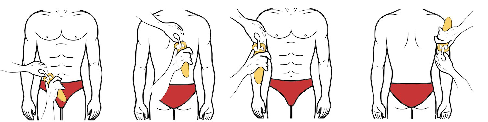

Body Composition Calculator
Age
Body Weight (kg)

Everything should be measured as shown in above image
Biceps (mm) (Front of biceps)
Triceps (mm) (Back of your arm)
Subscapular (mm) (At your back)
Suprailiac (mm) (near belly buttton)
Calculate